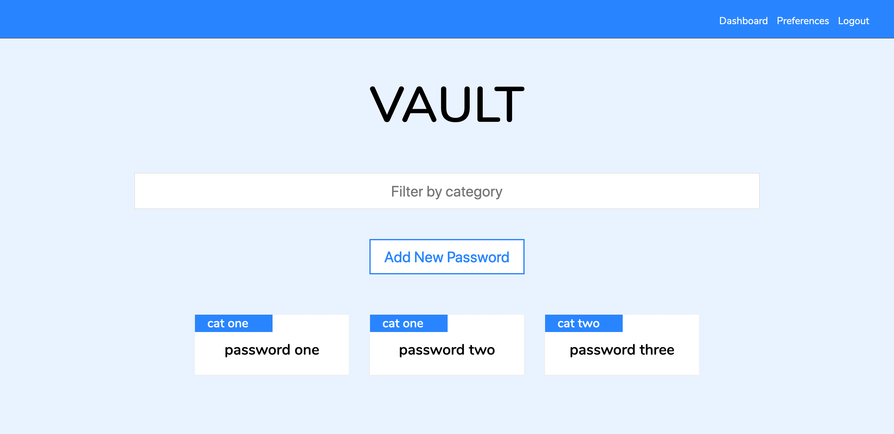
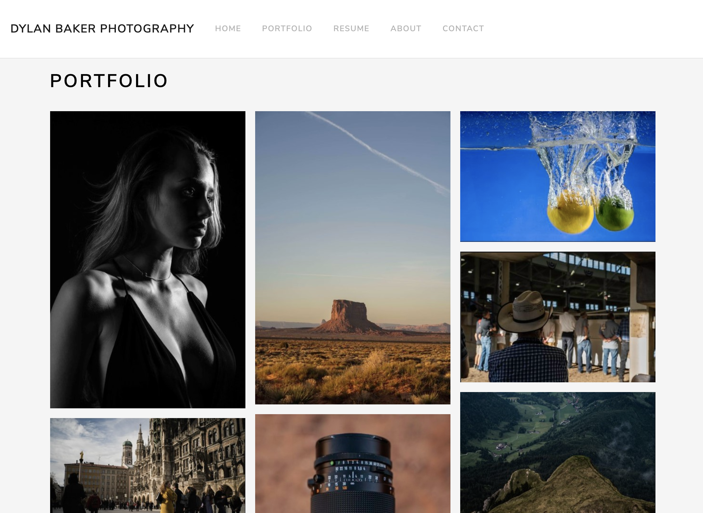

Secure Suite
A software security package including a password manager, an URL analysis AI, and other security tools.
A software security package including a password manager, an URL analysis AI, and other security tools.
A photography portfolio showcase and store made with dropwizard.
A simple wordpress CTF walkthrough for those beginning in pentesting and cybersecurity
A medium difficulty vulnerable machine walkthrough
My name is Oliver Haney and I study computer sciences as a senior at Stetson University in Deland, Florida. I specialize in back-end and front-end application development, using these skills to package and deploy artificial intelligence and cybersecurity solutions. My goal is to encourage and maintain a free and open internet that empowers everyone to approach their most knowledgeable self.
In my early college years, I realized that I was not meant to be in economics and finance, but that I had a passionate fascination for programming. I became motivated to learn Java, C++, and Python, which I did. I learned more about best programming practices as I attempted to implement more and more complex projects, and discovered new ways to write as little code as possible. I learned that abstraction is a powerful tool, but I still lacked the experience to use it to guide my programming in a meaningful and efficient way.
As I accumulated these new skills across a variety of technologies and areas of study, I felt I was ready to apply for more internships. LSQ gave me my first internship opportunity, and it was everything an intership should be. The management including my direct boss were extremely accommodating, encouraging, and generally helpful in my development as a software engineer. I got to work on and even create primary business services that increased in both impact and complexity.
Now, I am focusing on my first open source projects, Secrets Manager and Secure Suite. You can follow the link to the projects landing page, which hosts all resources for getting started. Secrets Manager is an augmented password manager optimized for security. Also included in the package is a machine learning based malicious URL traffic detection tool set called MalURLNet, a component of Secure Suite.
A software security package including a password manager, an URL analysis AI, and other security tools.
Dylan Baker Photography is a dropwizard project that showcases an photography protfolio and, using the Stripe API, has a web store to purchase prints.
